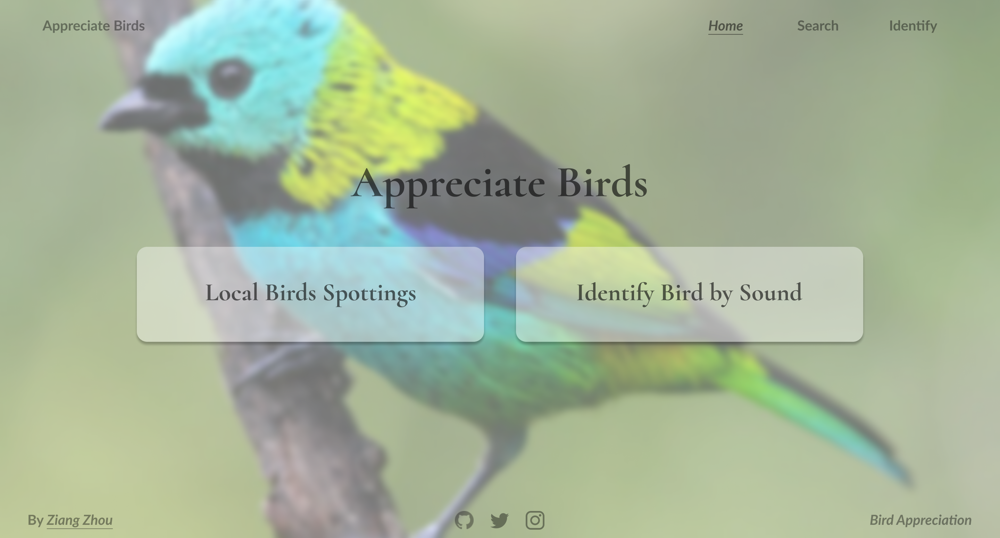

For this proposal, I plan to deploy a bird-related web app, which mainly has two functions: 1) Fetch the latest region-specific bird activity information. 2) Web-based bird sound classification. The former function will be using the location API to get the current location and the ebird API v2 to fetch information of bird-spotting near this region. The latter functionality will deploy the deep learning-based bird classification model through javascript.
There are still some difficulties to finish the first function, such as mapping location (long, lat) to ebird-api-specific region code, which is indispensable in ebird API JSON fetching. Moreover, ebird requires daily authorized API, therefore causing difficulties for constant deployment. I plan to finish the first function and move to the next function if everything goes on well with the first one and time permits.
To get the bird activities near the user, the application needs to be acknowledged about the user's location. Therefore, the map api will be used to fetch the latitude and longitude of the user's location. The location information will be applied to ebird API v2, and return a JSON of recent bird activities spotted in that region.
I tested my idea by writing code to fetch data from the API, and they succeeded. It is also worth noticing that ebird api requires an authentication to use, and the authentication is daily-authorizing.
Code validation of two APIs
The sitemap has a simple structure, contructed of Search Section and Identify Section. In each of the sections, there are two pages respectively demonstrating before and after searching or identifying.

Sitemap of Bird Appreciation Website
There are five pages in total, including the homepage, search page, search results page, identify page, identify results page. Below is the first version of Bird Appreciation Webapp.

Home page

Search Page

Search Page Result

Indentify Page

Identify Result Page